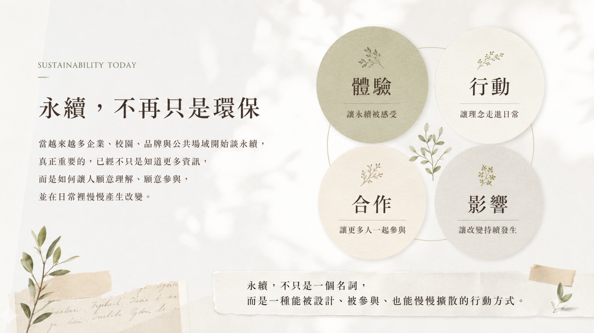
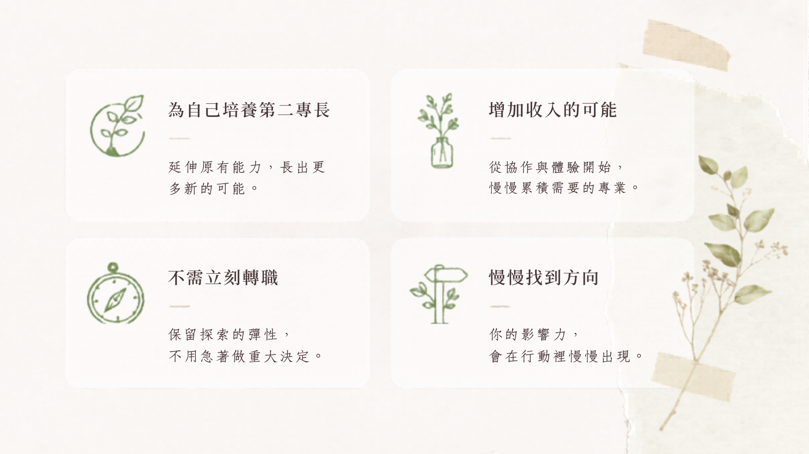
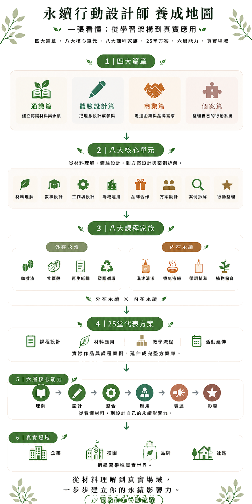
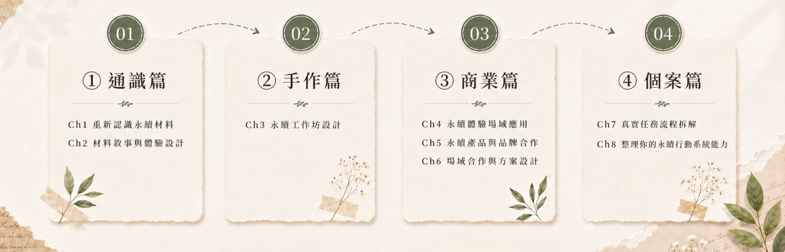
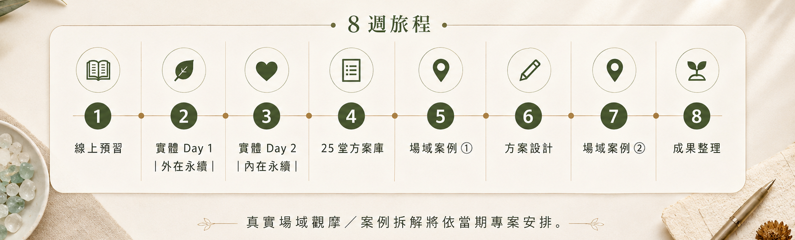
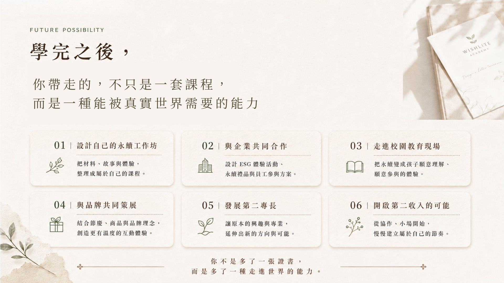
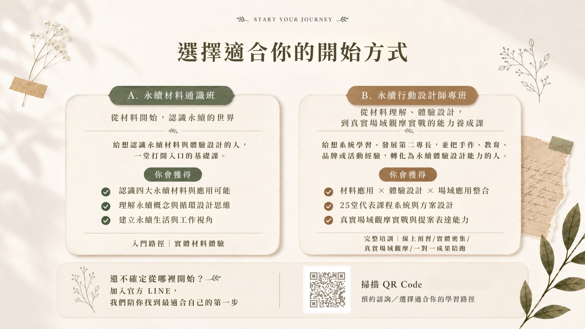

WISHLITE SUSTAINABLE ACADEMY
永續行動設計師培訓計畫
Sustainable Action Designer Program
8 週培訓計畫｜從永續材料、體驗設計到真實場域應用
把喜歡的創作與手作，整理成能被企業、校園、社區與品牌場域使用的永續體驗方案。
永續材料 × 體驗設計 × 真實場域 × 多元合作
WISHLITE SUSTAINABLE ACADEMY
Sustainable Action Designer Program
8 週培訓計畫｜從永續材料、體驗設計到真實場域應用
把喜歡的創作與手作，整理成能被企業、校園、社區與品牌場域使用的永續體驗方案。
永續材料 × 體驗設計 × 真實場域 × 多元合作
每個人，都有自己靠近永續的方式。


有些人從創作開始，有些人從陪伴開始，
也有些人，從整理與協作開始。


當永續走進企業、校園、品牌與日常生活，
世界需要的不只是懂永續的人，
而是能把理念轉化成體驗、行動與參與的人。
永續行動設計師，是把材料、故事、體驗與真實需求，設計成一場讓更多人願意理解、願意參與的永續行動者。

你會完成第一份永續體驗方案：
對象、材料、流程、引導語與可應用場域。
也許你曾經想過：
如果未來有變化，我還有沒有別的可能？
不是要你立刻轉職，
而是提前累積一項能被真實場域需要的第二能力。


學習一套技能，設計你的永續影響力。
這些能力，不是一次長出來的。
它們會透過四大篇章與八個核心單元，一步步被訓練。

一位專業的永續行動設計師，
是在一步步學習、實作與場域經驗中累積出來的。

這 8 週，會帶你從理解材料、設計體驗，到完成自己的第一份永續方案。

📘 免費索取《永續行動設計師完整招生型錄》
課程架構｜八大課程家族｜25 堂代表方案｜學習路徑｜真實案例｜未來發展方向
不是一開始就很確定，也不是一開始就很厲害。
只是願意把心裡在乎的事，一步一步整理成可以行動的樣子。
有人從手作開始，有人從陪伴開始，有人從協作與現場經驗開始；
每一條路，都可以慢慢長出自己的方向。


這些經驗，不是停留在理念裡，
而是一場一場真實發生的永續行動。
沒有永續背景，可以嗎？
可以。我們會從材料、生活與真實場域開始，陪你一步一步建立理解。
工作很忙，跟得上嗎？
可以。課程採循序漸進，讓你能依照自己的節奏慢慢學、慢慢累積。
還不知道方向，可以嗎？
可以。很多方向，不是一開始就想清楚，而是在行動裡慢慢長出來的。
沒有教學經驗，可以嗎？
可以。我們會陪你慢慢建立教學設計與帶領能力。
一定要接案或創業嗎？
不用。你可以把這套能力用在原本的工作、品牌、教學、活動企劃或生活裡。接案與合作，只是其中一種可能。
